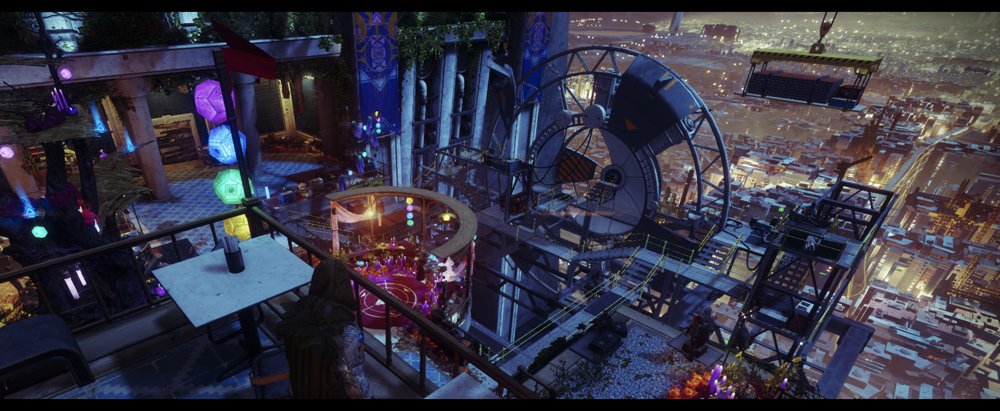
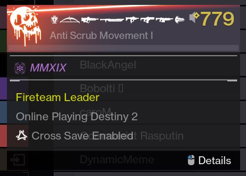

October Game of the Month: Destiny 2
Posted October 31, 2019

Ever since the original Destiny released the expansion "The Taken King", I've been a huge Destiny fan. The depth of lore, the fast and flashy gameplay, and the comradery between players all make for a fantastic experience. Bungie's extensive history in the video game industry has also lent itself to Destiny's depth of character. And very recently, Bungie also took the initiative to self-publish and split away from Activision-Blizzard, a company just as scummy as Ubisoft and EA.
For those not familiar with Destiny: a little bit of background for you. Humanity was visited by a benevolent (god-like, even) being we called the Traveler, which terraformed many of the planets and moons of our solar system, including the moon, Mars, IO, Nessus, Mercury, and more. Humanity had a Golden Age of technology and expansion before it was attacked by other aliens chasing the Traveler to destroy it or claim its power for their own. The Traveler disbursed thousands of small robots, called ghosts, which attach themselves to "worthy" individuals (this is where all of the RPG "you're the chosen one" cliche comes in, but stick with me here), and have the ability to revive these people after catastrophic deaths, making them virtually immortal. These folk are called Guardians, as they are tasked with protecting what little remains of humanity, dying over and over while facing terrifying aliens.
If you're not already familiar with the current issues of the video game industry, hyper-capitalist publishing companies top the list by a vast margin. Publishers have routinely undercut game studios (the ones who put all of the work into the product itself) by scrapping ideas, forcing premature deadlines, requiring predatory monetization methods (namely microtransactions), and repeatedly misleading customers. These publishers have also bought out a number of once-great game studios with the intent of repurposing them onto other, larger titles, but nearly all of these studios have since gone under or merged with larger studios.
On a more optimistic note, Destiny 2 recently released its newest expansion, Shadowkeep, alongside its transition to self-publishing. This change also put the game on Steam instead of Blizzard's client, which allowed all sorts of fun Steam user names to appear in-game. Reddit has been going nuts over it, as players have come up with numerous lore-related puns for names. Someone also figured out how to use icons from the game in your steam name, as seen on the left.
Destiny 2 is also fantastically festive. Most every holiday season entails decorations around the Tower, the main player hub, festive events and missions, and lots of community interaction both in-game in online. Halloween has brought the Festival of the Lost, sort of a fantasy Día de Los Muertos. NPCs always have fun new interactions, and many times big updates coincide with these holiday seasons.
It's a great time to be a Guardian. If you're interested in the game, you can play all of the legacy content, which is some 40+ hours of entertainment, for FREE on Steam. It's a pretty giant download, but the amount of content and the quality experience you'll get from it is absolutely worth your time.